Overview
In this tutorial we will export an animated camera from CRYENGINE to 3dsMax, Maya or any 3D application supporting the FBX format. We will use the FBX export to output the camera animation to your favourite DCC.
In general, it is not very difficult to get your animated camera to FBX. However, the more demanding part comes with the imported FBX camera in your target DCC program. We will show you how the CRYENGINE camera animation and settings translates to 3dsMax & Maya cameras, so get for all three programs an exact camera output.
Let's start!
Tutorial Files
CRYENGINE camera export level files:
Exported FBX and finished 3dsMax and Maya output scene files:
Create a CRYENGINE Camera
- Start the Sandbox Editor and create a new empty level. You may want to use any existing level, then proceed to step 4.
- Go to the Tools menu and open in Level Editor -> Create Object the Entity DropDownList to create some objects in your empty level.
(img01: Accessing the Create Object panel)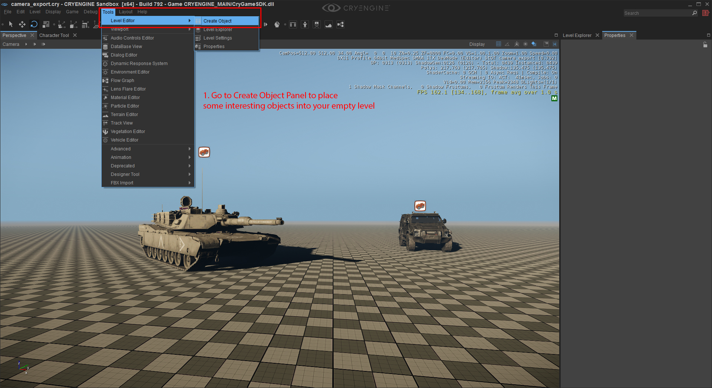
- We created an "Abrams" tank and a "SWAT_Van" from the Vehicles entity submenu. Please feel free to choose any geometric entity you want. It's only used as visual reference point for the camera.
(img02: Place some objects to look at for your camera)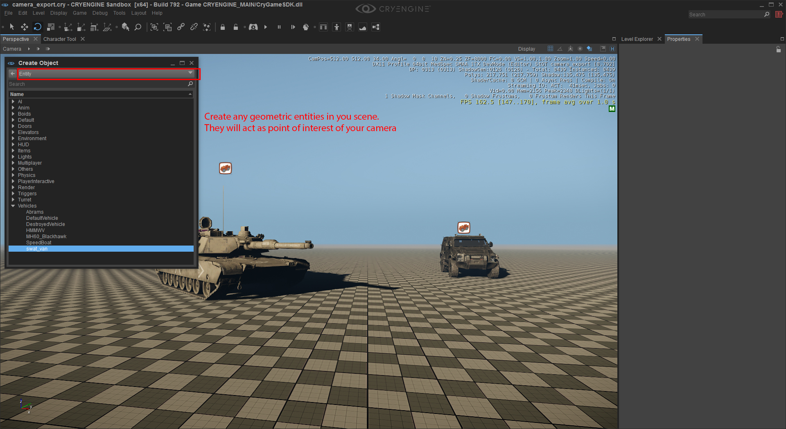
- You can create a user defined camera in several ways:
- Click on the Camera menu of the current active viewport and choose Create Camera from Current View:
- In the Create Object Panel, change to the Misc DropDownList to select and create a Camera entity.
Don't mistake the camera entity with the other entities from Entity -> Others -> CameraShake/CameraSource/PrecacheCamera or Entity -> Multiplayer -> CameraPoint.
(img03: How to create a camera in Sanbox Editor)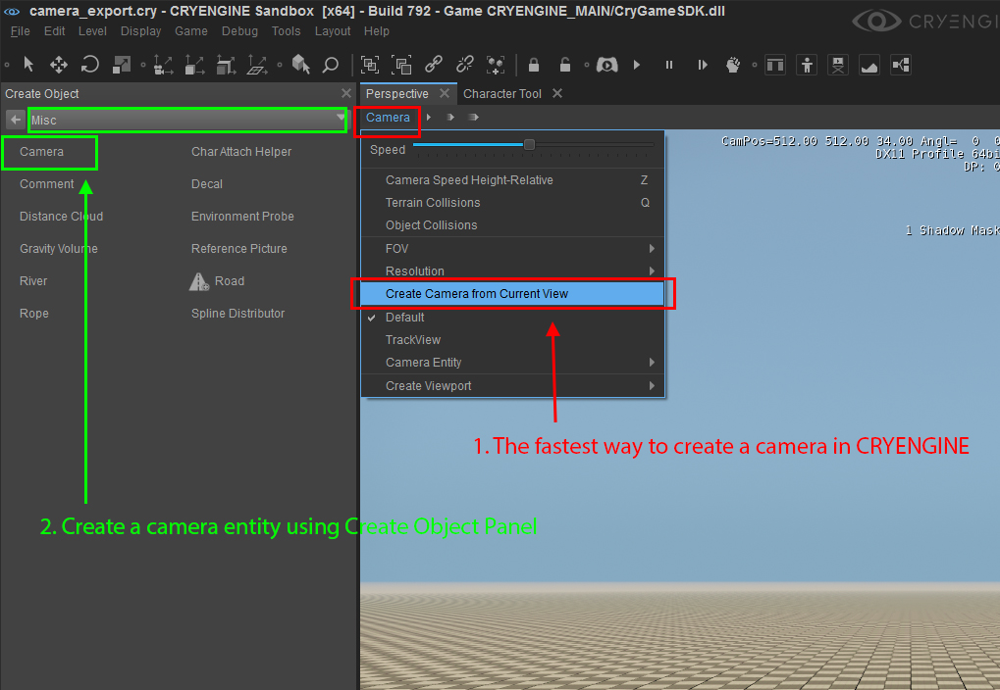
- Press the "1" and "2" key to translate/rotate the camera you created to aim its frustum at the objects you placed onto the level (your point of interest).
Press the "Q" key to have terrain collision activated and also you may want to adjust the viewport camera movement speed by pressing & holding the "WASD" keys while scrolling the middle mouse wheel.
(img05: In the Perspective viewport you can tweak your initial camera position and aiming point)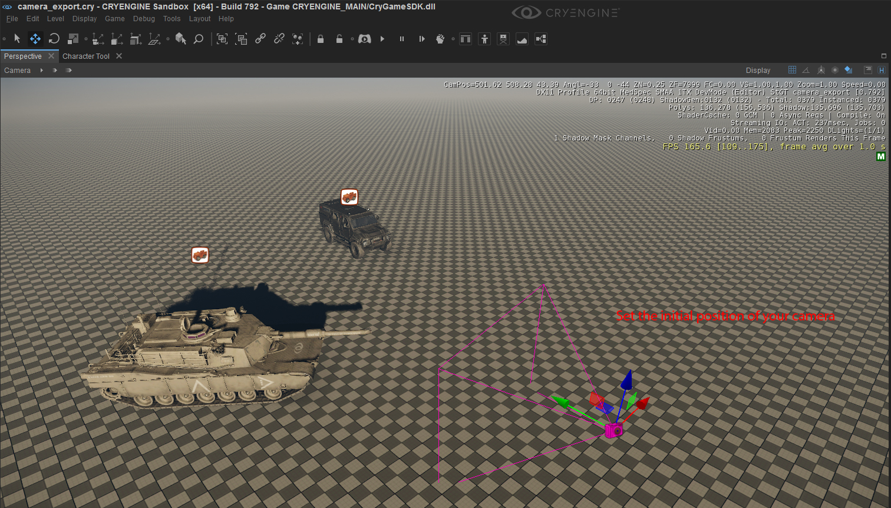
- If you check your point of interest by looking through your camera, you may need to "Unlock Camera Movement" from your current "Camera" viewport pane.
(img04: If have chosen the "Camera1" as your current camera entity nstead of the Perspective camera, to move the camera you need to unlock it first.)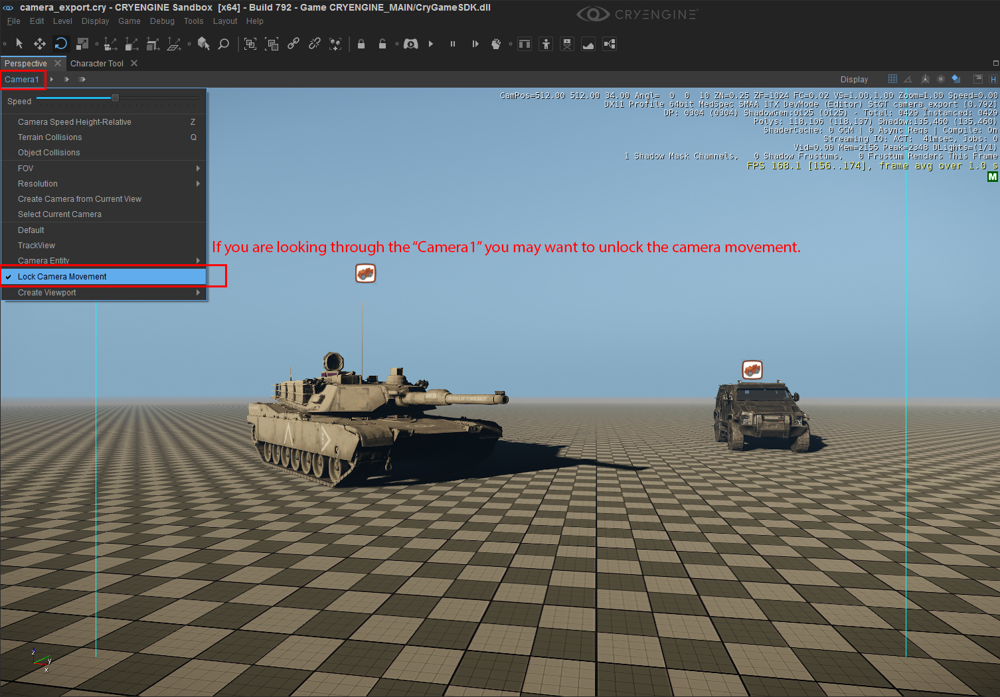
Create a sequence and animate the camera in Track View
Next we need to animate the camera. This is done by using Track View. This is our main production tool for making cinematic cutscenes in CRYENGINE.
- Open Track View from the Tools menu in Sandbox main menu bar.
- Before we can add an Director node and your previously created "Camera1" entity node, you must create a new sequence. In Track View, go to File -> New and give it a name, we chose "cam_anim":
(img07: Create a new camera sequence)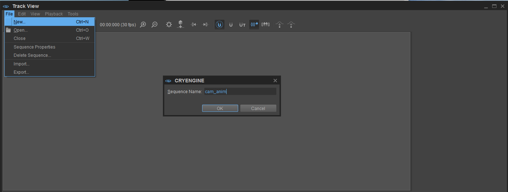
- Make sure you drag the width of the Track View window, so that it displays all icons in its quick access menu, especially the "Add selected entities" icon as shown in the img06 below.
(img06: A Director node and the animated camera "Camera1" has already been added)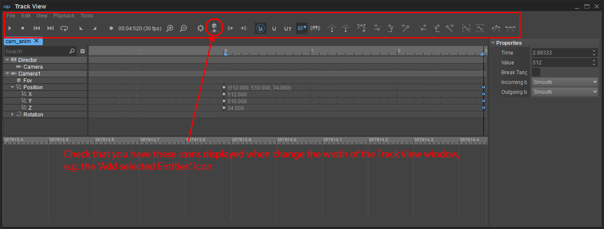
Usually, the TrackView is empty. If you already have a camera sequence node inside your level, you can choose File -> Open to open your previously created sequences - Remember you gave it the name "cam_anim" in step 2? It will then show up in a new Tab in Track View . - (Optional: Add a Director node to Track View. You need the Director node if you have multiple cameras you must switch between them. Also, the Director node has a camera track added automatically. This is where you can set the active camera by time. Since we want only one camera animation exported it is not required to change anything there.)
- Have your "Camera1" selected and click on the "Add Selected Entities" icon. You should notice the "Camera1" being added to a new track:
(img08: custom Camera added to a track, so it becomes animatble)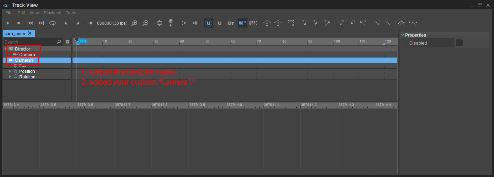
- Now It's time to set up the camera viewport to the desired output resolution, the FOV etc. These information must also be translated to the camera of your DCC when you rebuild the exported camera. Use the Camera menu of the viewport pane
- FOV: 60° (vertical)
- Camera Resolution (Aspect Ratio: 2.39:1, 16:9, 4:3, etc.): 640 x 480
- FPS: 30
(img09: A new "Perspective" viewport was created, changed it to use "Camera1" and have both views stacked on top)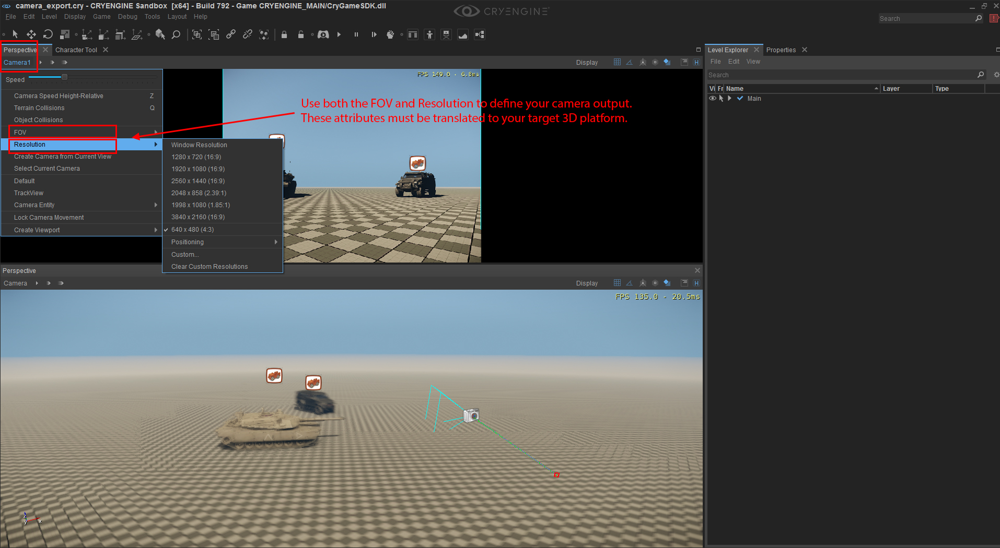
- We can animate the camera by making positional and rotational changes when you have the "Record" button activated. To navigate in Track View you may need to know these keyboard shortcuts:
- MMB-Click & Drag to pan in Track View
- CTRL + Mouse wheel to zoom in to/out of the Track View
Your animated camera has several keys set in the position/rotation track as shown in the picture below. Drag the time slider of the Track View to see your camera animation or click the "Play" icon.
Set the Start and End time of your sequence. In the sample scene of this tutorial, we have a 240 frames animation. The lower part is the curve editor to edit the animation curves of your attributes.It is important to animate your custom camera in both positional and rotational changes.
Otherwise, in the next DCC tutorial section, where you import the FBX data, you won't understand the requirements of matching your target DCC camera transformations.
(img10a: Your animated result should be looking like this)
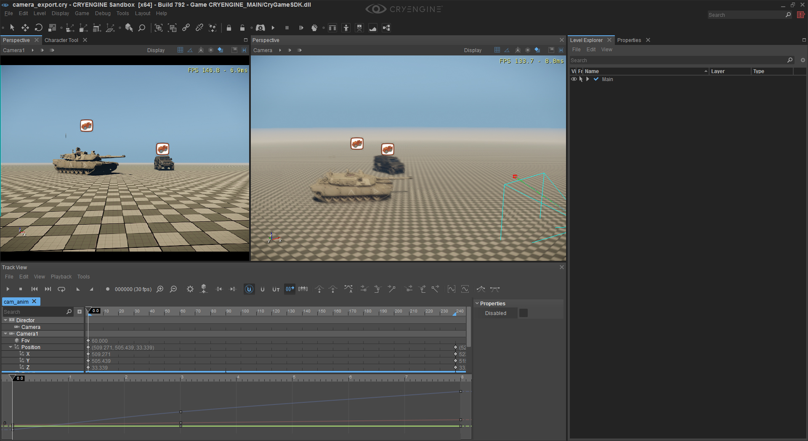
- Finally, we can export to FBX. But, we have export the animated camera from Track View, while the other scene object using "Export Selected Objects" from Sandbox main menu bar.
- Selected scene objects, which are for visual reference of the camera animation
Use the Level Explorer to select you objects you want to export and go to the Sandbox menu: Levels -> Export Selected Objects. You may leave out the "cam_anim" sequence node. Leave everything default, except changing the exported file format to be FBX.
(img10b: Export any scene objects which may be important for the camera animation)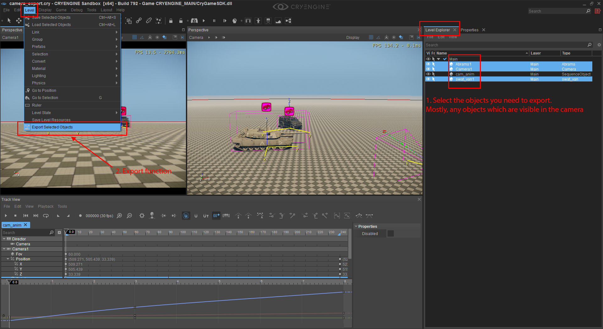
- the camera animation itself
Go to Track View and under File -> willLeave the FBX export option as it is
(img10c: Export FBX camera animation from Track View)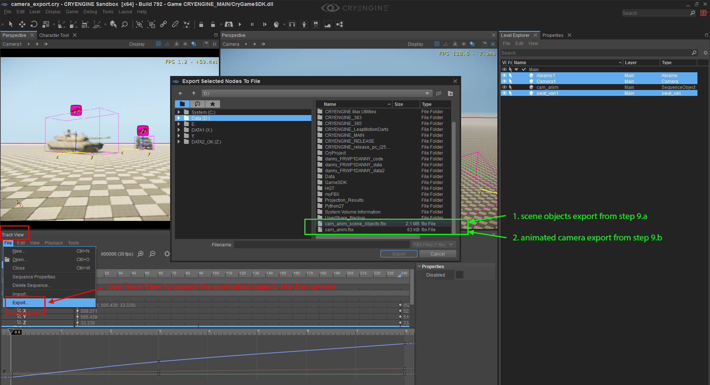
- Selected scene objects, which are for visual reference of the camera animation
- Before we switch to 3dsMax and Maya, check you have two exported FBX files from the step 9:
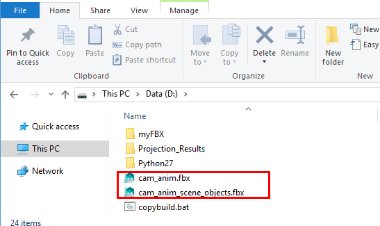
Import FBX camera data to target 3D program
Start with an empty scene. We need to import the FBX scene objects and after that import the camera animation. Anytime you change the camera animation in CRYENGINE you can import and let FBX automatically update your existing scene.
Basically, the scene objects should orientated correctly by using the FBX Importer in 3ds Max & Maya. Only the camera needs to be realigned to match the animation from CRYENGINE.
Lets advance to the DCC camera tutorials for re-aligning and matching the camera setting, so we get the same output as shown in CRYENGINE camera